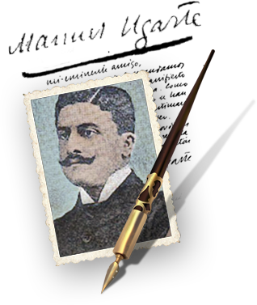

Bibliografía de Manuel Ugarte
ÍNDICE
- Obras publicadas de Manuel Ugarte en vida
- Obras póstumas publicadas de Manuel Ugarte
- Cuentos y fragmentos de novelas de Manuel Ugarte publicados en diarios y revistas
- Poemas de Manuel Ugarte publicados en diarios y revistas
- Crónicas y artículos de Manuel Ugarte publicados en diarios y revistas
- Artículos y reseñas de Manuel Ugarte publicados en diarios y revistas
- Prólogos de Manuel Ugarte
- Bibliografía sobre Manuel Ugarte
OBRAS PUBLICADAS DE MANUEL UGARTE EN VIDA
- Palabras (1893). Buenos Aires: Edición del autor.
- Poemas grotescos (1893). Buenos Aires: Edición del autor.
- Serenata (1897). Buenos Aires: Pablo E. Coni.
- Sonatina (1898). Buenos Aires: Edición del autor.
- Paisajes Parisienses (1901). Paris: Editorial Garnier.
- Crónicas de Boulevard (1902). Paris: Editorial Garnier.
- Cuentos de la Pampa (1903). Madrid: Biblioteca Universal Calpe.
- Las ideas del siglo (1904). Buenos Aires: Editorial Partido Socialista de la Argentina.
- Visiones de España (1904). Valencia: Sempere.
- Mujeres de París (1904). París: Editorial Garnier.
- El arte y la democracia (1904). Valencia: Sempere.
- Los estudiantes de París (1905). Barcelona: López Editor.
- Una tarde de otoño (1905). París: Editorial Garnier.
- La joven literatura hispanoamericana (1905). Paris: Armand Collins editor.
- Enfermedades sociales (1906). Barcelona: Sopena Editor.
- Vendimias juveniles (1906). París: Editorial Garnier.
- Poesías completas (1907). Barcelona: Maucci.
- Burbujas de la vida (1908). París: Sociedad Ediciones Literarias y Artísticas, Ollendorff.
- Las nuevas tendencias literarias (1908). Valencia: Sempere.
- Cuentos argentinos (1910). París: Editorial Garnier. 1ª edición.
- Poesías completas (1910). Barcelona: Maucci. 1ª edición.
- El porvenir de la América Española (1911). Valencia: F. Sempere y Compañía.
- Manuel Ugarte y el Partido Socialista: Documentos recopilados por un argentino (1914). Barcelona, Hispano–Americana.
- La verdad sobre Méjico (1919). Bilbao: Editado por “Un grupo de españoles”.
- Poesías completas (1921). Barcelona: Maucci. 2ª edición.
- Las espontáneas (1921). Barcelona: Sopena editor.
- El porvenir de la América Española (1920). Valencia: Prometeo Editor. 2ª edición.
- Mi campaña hispanoamericana (1922). Barcelona: Editorial Cervantes.
- La Patria Grande (1922). Madrid: Editorial Internacional.
- El destino de un continente (1923). Madrid: Editorial Mundo Latino.
- El crimen de la máscara (1924). Valencia: Editorial Sempere.
- El camino de los dioses (1926). Barcelona: Sociedad General de Publicaciones.
- La vida inverosímil (1927). Barcelona: Editorial Maucci.
- Cuentos de la Pampa (1927). Madrid: Calpe. 2ª edición.
- Las mejores páginas de Manuel Ugarte (1929). Barcelona: Editorial Araluce.
- El dolor de escribir (1933). Madrid: Compañía Iberoamericana de publicaciones.
- Cuentos de la Pampa (1940). Paris: Editorial Garnier. 3era edición.
- Escritores Iberoamericanos de 1900 (1943). Santiago de Chile: Editorial Orbe. 1ª edición.
- Escritores Iberoamericanos de 1900 (1947). México: Vértice. 2ª edición.
- El naufragio de los argonautas (1951). Santiago de Chile: Editorial Zigzag.
OBRAS PÓSTUMAS PUBLICADAS DE MANUEL UGARTE
- El porvenir de América Latina (1953). Buenos Aires: Indoamérica. 3ª edición.
- La Patria Grande (1960). Buenos Aires, Coyoacán. 2ª edición.
- La reconstrucción de Hispanoamérica (1961). Buenos Aires: Coyoacán.
- El destino de un continente (1962). Buenos Aires: Ediciones de la Patria Grande. 2ª edición.
- La Nación Latinoamericana (1978). Caracas: Biblioteca Ayacucho.
- La Patria Grande y otros textos (1994). Buenos Aires: Theoria. 3ª edición
- El dolor de escribir (1999). Buenos Aires: Fondo Nacional de las Artes. 2ª edición.
- Epistolario Manuel Ugarte (1896-1951) (1999). Buenos Aires: Archivo General de la Nación.
- Crónicas de Boulevard (2010). Buenos Aires: Ediciones Biblioteca Nacional. 2ª edición.
- La Patria Grande (2010). Buenos Aires: Capital Intelectual. 4ª edición.
- No moriré completamente. Edición homenaje a “El Porvenir de América Latina” de Manuel Ugarte (2010). Buenos Aires: Asociación Manuel Ugarte.
- Hacia la unidad latinoamericana (2013). Buenos Aires: Punto de Encuentro.
- Mi campaña hispanoamericana (2014). Buenos Aires: Punto de Encuentro.
- Manuel Ugarte. Pasión Latinoamericana: El porvenir de América Latina [5ª edición], La Patria Grande [5ª edición], La reconstrucción de Hispanoamérica [2ª edición] (2015). Remedios de Escalada: Ediciones de la UNLa.
CUENTOS Y FRAGMENTOS DE NOVELAS DE MANUEL UGARTE PUBLICADOS EN DIARIOS Y REVISTAS
- “Beso amargo”, La revista literaria, Buenos Aires, año II, nº 19, 15/06/1896, p. 291.
- Graveloche (novela). El Tiempo, Buenos Aires, Mayo-junio de 1899. “Los caballos salvajes”. Buenos Aires, Revista Nacional, T. 34, Entrega VI, 1902, pp. 247-252.
- La novela de las horas y los días, Buenos Aires, Revista Nacional, T. 35, Entrega I y II, 1903, pp. 247-252.
- “La prueba”, Ideas, Buenos Aires, año II, t. 5, nº 17, septiembre 1904, pp. 26-36.
- “La primer cana”, Ideas, Buenos Aires, año III, t. 6, nº 22, febrero 1905, pp. 166-169.
- “Tristeza de otoño”, Revista Nacional, T. 38, 1904, p. 216.
- Marcela, [en folletín], El País, Buenos Aires, 19 al 21/08/ 1901, p. 3 Graveloche (novela), Buenos Aires, ed. Ars, 1918, en “La novela para todos”, año I, n°3 (quincenal)
- “La montaña” Archivo GN, Leg. 2232.
- “El gigante y la luna” Archivo GN, Leg. 2232
- “La venganza del capataz”, La razón, Montevideo, s/f (AGN Leg 2247)
- “La guerra”, La revista de América, 1896.
- Sistematización realizada por Merbilhaá, M. (2009) Trayectoria intelectual y literaria de Manuel Ugarte (1895-1924) [en línea]. Tesis de Posgrado. Universidad Nacional de La Plata. Facultad de Humanidades y Ciencias de la Educación
POEMAS DE MANUEL UGARTE PUBLICADOS EN DIARIOS Y REVISTAS
- “Indómita”, La revista literaria, Buenos Aires, año I, nº 2 y 3, 22/10/1895
- “Venganza”, La revista literaria, Buenos Aires, año II, nº 17, 15/05/1896, p. 260.
- “Alem”, La revista literaria, Buenos Aires, año II, nº 21, 15/07/1896, p. 322.
- “Voto”, La revista literaria, Buenos Aires, año II, nº 26, 30/09/1896.
- “A Pierrot”, Ideas, Buenos Aires, año I, t. 2, nº 6, octubre 1903.
- “A une demi-mondaine”, Ideas, Buenos Aires, año I, t. 2, nº 8, diciembre 1903.
- “Claro de luna”, Nosotros, Buenos Aires, año II, tomo 2, nº 10-11, mayo-junio, 1908, p. 298.
- “A una viajera desconocida”, Nosotros, Buenos Aires, año II, tomo 2, nº 10-11, mayo-junio 1908, p. 298.
- “Páginas de album” ”, Nosotros, año VII, nº50, junio de 1913.
CRÓNICAS Y ARTÍCULOS DE MANUEL UGARTE PUBLICADOS EN DIARIOS Y REVISTAS
- [Blanchette]. El Tiempo, Buenos Aires, Octubre de 1897.
- [Paseos por calles de París]. El Tiempo, Buenos Aires, 18/10/1897.
- [Sobre acto recordatorio de la Comuna de París], El Tiempo, Buenos Aires, 22/05/1898.
- [Sobre EEUU, desde allí]. El Tiempo, Buenos Aires, Julio de 1899.
- [Sobre EEUU, desde allí]. El Tiempo, Buenos Aires, 16/08/ 1899.
- [Crón. Desde México]. El Tiempo, Buenos Aires, 4/10/1899.
- [Crón. Desde México]. El Tiempo, Buenos Aires, 16/10/1899.
- [Sobre La Clairière de M. Donnay]. El Tiempo, Buenos Aires, 22/05/1900.
- “El arte nuevo y el socialismo”. El Tiempo, Buenos Aires, 24/05/1900.
- “Teatro cívico”. El Tiempo, Buenos Aires, 23/07/1900.
- [Sobre los Boers]. El Tiempo, Buenos Aires, 30/08/1900. [Reed en Arte y Dem o Las enf. Soc.]
- “Influence de la littératurefrançaise en Espagne”. La Revue. Paris, vol. 3, Nº 46, septembre 1903.
- “El teatro criollo” [en francés]. La revue, 15/04/1904 [ Reed. en Las nuevas tendencias lit,]
- “Exposición de Bellas Artes”. El País, Domingo 2/06/1901: 3 [Reed en Crónicas del Bul]
- “Los Hispano-americanos en el Salón”. El País, Domingo 13/06/1901: 3 [Reed en Crónicas del Bul]
- “Rubén Darío. España Contemporánea”, El País. Buenos Aires, 10 de julio de 1901, 3 col.1-2.
- “La Reina Ranavalo. Asediada por el reporterismo”. El País, 21/07/1901: 3 [Reed en Crónicas del Bul]
- “Resurrecciones históricas.Una fiesta en Trianón. El Club de los Jacobinos”. El País, 26/08/1901: 3. [Reed en Crónicas del Bul]
- “Los problemas americanos. El peligro yanqui”. El País, 19/10/1901: 2
- “Problemas americanos. La defensa latina”. El País, 9/11/1901: 2-3
- “Los caídos”. Madrid Cómico, 9/02/1901: 2.
- "Libros recibidos: Paisajes parisienses”. Madrid Cómico, nº 37, 14/09/1901: 299.
- “La rosa encantada”. Madrid Cómico, 21/09/1901: 4. [Publ. en Paisajes parisienses]
- “París. Los caídos”. Madrid Cómico, 12/10/1901: 330.
- “Literatura francesa”. La lectura, 1 de julio de 1903: 180.
- “El pintor y la actriz”. La lectura, 1 de julio de 1903: 320.
- “La guerra”. La lectura, 1 de octubre de 1903: 179.
- “Nuevas tendencias literarias”, Ideas, Buenos Aires, año I, t. 2, nº 5, septiembre, 1903.
- “Influence de la littératurefrançaise en Espagne”.º Paris, La revue, septembre 1903.
- “La colonización francesa en Argelia”. La lectura, s/f.
- “L’âmeespagnole”. Paris, La revue. Paris: Vol. 1, Année 1905:194-204.
- “La intoxicación literaria”. La Nación, 24/04/1905, pp. 3-4. [Reed en Enfermed sociales]
- “¿Cuál es la nueva orientación actual? El arte social. ‘Enquête’ de ‘La Nación’”. La Nación, 26/04/1905: 4 [En Las nuevas tendencias:111 -125].
- “Sobre el proyecto de ‘Ley del trabajo’”, Ideas, Buenos Aires, año III, t. 6, nº 23-24, marzo-abril 1905, pp. 406-426.
- “La literatura del día. Enquête a La Nación”. La Nación, 5/05/1905, p. 4 [respuesta escrita por Unamuno a la “Enquête” de Ugarte sobre “La literatura española del día; bajo la firma, aparece la fecha “Marzo de 1903”].
- “Intimidades parisienses. Los niños pobres”. La Nación, 6/05/1905, p. 4
- “Intimidades parisienses. Los amigos de los perros. El paraíso de los animales”. La Nación, 21/05/1905, p. 4 [Reed en Burbujas de la vida]
- “Las razones del arte social”. La lectura. Revista de Ciencias y Artes. Madrid, a. VII, 73, 1/01/ 1907: 125-133.
- “Crónica americana. Libros sudamericanos”. La lectura. Revista de Ciencias y Artes. Madrid, a. VII, 77, mayo de 1907: 57-61 [Reed. En Las nuevas tendencias literarias: 133- 140]
- “Crónica americana. Libros sudamericanos”. La lectura. Revista de Ciencias y Artes. Madrid, a. VII, 78, junio de 1907: 188-191 [Reed. En Las nuevas tendencias literarias: 140-145]
- “Crónica americana. Libros sudamericanos”. La lectura. Revista de Ciencias y Artes. Madrid, a. VII, 81, septiembre de 1907: 42-46 [Reed. En Las nuevas tendencias literarias: 145- 151]
- “Crónica americana. Libros sudamericanos”. La lectura. Revista de Ciencias y Artes. Madrid, a. VII, 82, octubre de 1907: 237 [Reed. En Las nuevas tendencias literarias: 152-157]
- “Crónica americana”. “Indice de libros americanos”. La lectura. Madrid, a. VIII, septiembre de 1908: 88 – 99.
ARTÍCULOS Y RESEÑAS DE MANUEL UGARTE PUBLICADOS EN DIARIOS Y REVISTAS
- [sobre la pena de muerte], El Sol, junio de 1901 (ref. La Nación, 16/06/1901).
- “Españacontemporánea de R. Darío, El País, 10/07/1901, p.3
- “’El alma de los perros’ por Juan José SoizaReilly”, Ideas y figuras nº13, Buenos Aires, 10/09/1909.
- “Unaentrevista con Jean Jaurès”, Ideas y figuras nº58, Buenos Aires, 21/09/1911.
- “Respuesta a la encuesta sobre ‘¿Cuál es el valor del Martín Fierro?’”, Nosotros, año VII, nº50, junio de 1913. “Rubén Darío. Su personalidad literaria”, Nosotros, año X, v. 21, nº82, febrero de 1916, pp. 285.
- “Escritores iberoamericanos de 1900 (Biografías)”, Revista literaria Hoy, Santiago de Chile, año XII, nº 590, 11/03/1943: 53.
- “Las razones del arte social”. La lectura. Revista de Ciencias y Artes. Madrid, a. VII, enero de 1907: 125-133. [Reed. En Las nuevas tendencias literarias: 164-173]
- “Impar. La novela y la vida”. El imparcial, Madrid, 28/12/1908.
- “Indice de libros americanos”. La lectura. Madrid, a. IX, mayo de 1909: 88 – 89.
- “Indice de libros americanos”. La lectura. Madrid, a. IX, septiembre de 1909: 203.
- “Les états-Unisetl’Amérique du Sud”. La revue. Paris: Vol. 4, 1er juillet-15 août 1909: 145-159.
- “Women writers in South-America”, New York, “The destiny of a continent. By Manuel Ugarte”, Workers Monthly, March 1926.
PRÓLOGOS DE MANUEL UGARTE
- Eduardo de Ory. La primavera canta…Poesías. París, Librería Hispano-americana, 1907.
- Rueda, Salvador. Trompetas de órgano, 1907.
- Barbagelata, Hugo D. Páginas americanas, 1909.
- Echagüe, Juan Pablo. Prosa de combate, 1909.
- Fernández Ríos, Ovidio. Por los jardines del alma, 1909.
- Paterson, Roberto. La ciudad absurda. Buenos Aires, Moen, 1913.
- Saturnino Ubeda, Vida militar de Manuel Dorrego, S/,editor, La Plata, 1917.
BIBLIOGRAFIA SOBRE MANUEL UGARTE
- Barrios, Miguel Ángel. El latinoamericanismo en el pensamiento de Manuel Ugarte. Buenos Aires, Editorial Biblos, 2007.
- Carrión, Benjamín. Manuel Ugarte. Los creadores de Nuestra América. Madrid, Sociedad General Española de Librerías, 1928.
- Ehrlich, Laura. “Una convivencia difícil. Manuel Ugarte entre el modernismo latinoamericano y el socialismo". En: Políticas de la memoria 6/7, Buenos Aires, Verano 2006/2007.
- Galasso, Norberto (Cdor) Los hombres que reescribieron la historia. Buenos Aires, Editorial punto de encuentro, 2010.
- Galasso, Norberto. Los malditos. Hombres y mujeres excluidos de la historia oficial de los argentinos. Buenos Aires, Ediciones Madres de Plaza de Mayo, 2005.
- Galasso, Norberto. Manuel Ugarte y la unidad latinoamericana. Buenos Aires, Ediciones Colihue, 2012.
- Galasso, Norberto. Manuel Ugarte, un argentino maldito. Buenos Aires, ediciones del Pensamiento Nacional, 1981.
- Galasso, Norberto. Manuel Ugarte. Buenos Aires, EUBEDA, 1973.
- González, Horacio. Manuel Ugarte. Modernismo y Latinoamericanismo. Buenos Aires, Universidad Nacional de General Sarmiento, 2017.
- López, María Pía. “Arrojo y sensatez: el antiimperialismo de Manuel Ugarte”. Estudio preliminar. En Ugarte, M. La patria grande. Buenos Aires, Editorial Capital Intelectual, 2010. pp. 9-25.
- Marianetti, Benito. Manuel Ugarte. Un precursor de la lucha emancipadora de América Latina. Buenos Aires, Ediciones Silaba, 1976.
- Merbilhaá, Margarita. Trayectoria intelectual y literaria de Manuel Ugarte (1895-1924). Tesis doctoral presentada en la Universidad Nacional de La Plata, 2009.
- Maíz, Claudio. Nuevas cartografías simbólicas. Espacio, identidad y crisis en la ensayística de Manuel Ugarte. En: "Revista de Literaturas Modernas", Editorial Facultad de Filosofía y Letras, UNcuyo, 2001. p. 127 - 150.
- Maíz, Claudio. Ensayo, viaje y memoria. Lectura de El Destino de un Continente (1923) de Manuel Ugarte. CILHA. Editorial Facultad de Filosofía y Letras, Universidad Nacional de Cuyo, Mendoza, 2007. pp. 144 - 161.
- Olalla, Marcos. ”Modernismo y esfera pública en la Argentina. Socialismo y literatura en Leopoldo Lugones y Manuel Ugarte”, en Payeras Grau, María y Fernández Ripoll, Luis (ed.), Fin de siglo y modernismo, Palma Universitaria de les illes balears, 2001.
- Peñafort, Eduardo. "Manuel Ugarte en el fin de siglo: la puesta en discurso de la subjetividad en el Fin de siglo". Fin(es) de siglo y Modernismo: Congreso Internacional Buenos Aires-La Plata agosto 1996 / coord. por María Payeras Grau, Luis M. Fernández Ripoll, Vol. 1, 1996.
- Pinillos, Nieves. “Manuel Ugarte. Un hombre para este tiempo”, en Cuadernos Americanos, septiembre-octubre, Universidad Nacional Autónoma de México, México D.F., 1987.
- Pinillos, Nieves. Manuel Ugarte. Madrid, Ediciones de Cultura Hispánica, 1989.
- Piñeiro Iñiguez, Carlos. Pensadores latinoamericanos del siglo XX. Buenos Aires, Siglo XXI, 2006.
- Ramos, Abelardo. Manuel Ugarte y la Revolución Latinoamericana. Buenos Aires, Editorial Coyoacan, 1961.
- Ramos, Víctor. Manuel Ugarte. En Página/12, Colección Pensadores de la Patria Grande, 16 de diciembre de 2014.
- Sepúlveda Muñoz, Isidro. "Componentes del latinoamericanismo en Manuel Ugarte". Espacio, Tiempo y Forma, Serie V, f-i." Contemporánea, n." 2, 1989, págs. 281-297.